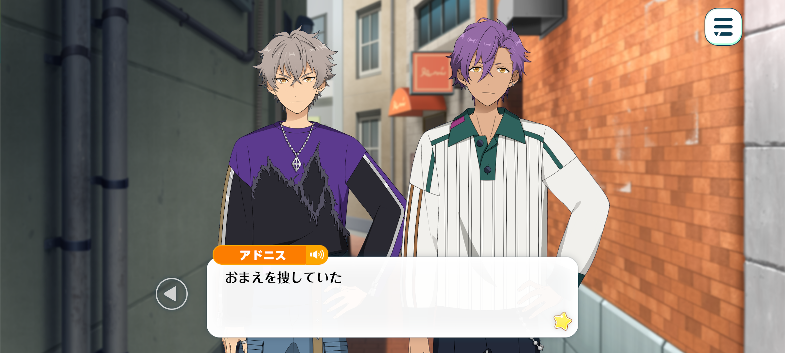
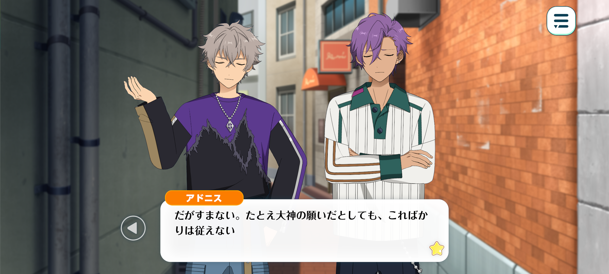
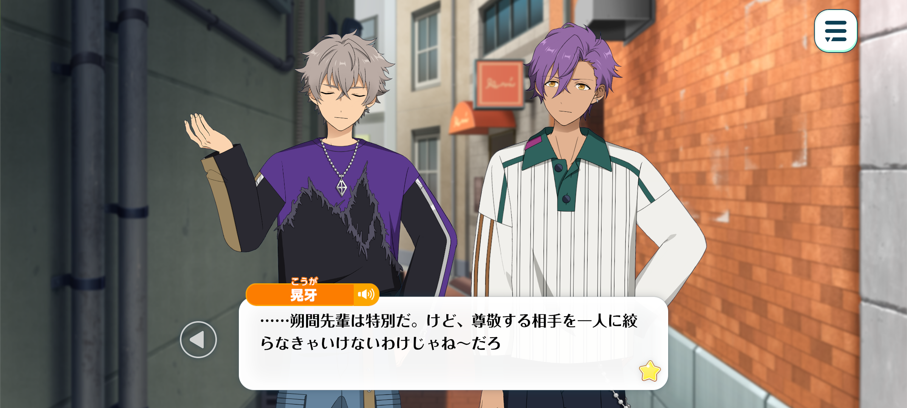
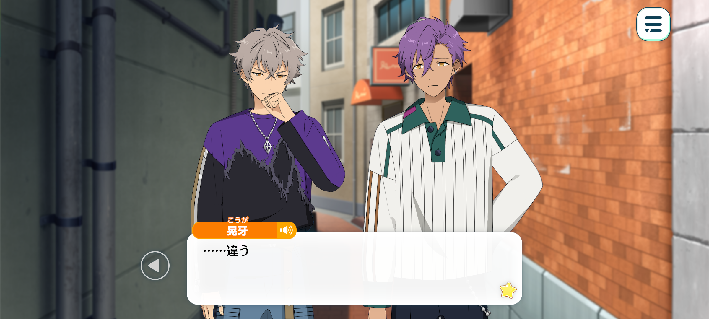
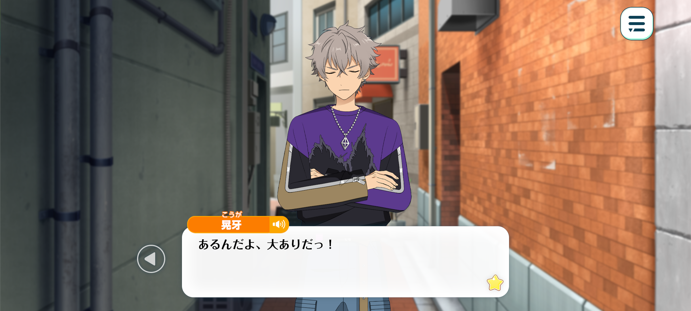
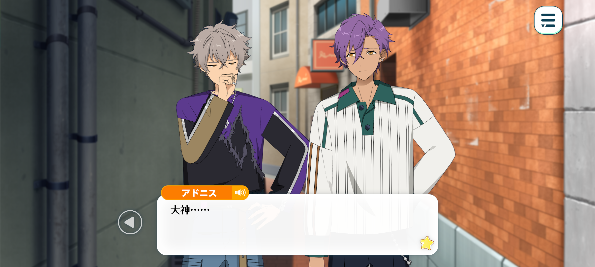

In Memoriam◆Handwriting, Chasing, Rambling
Good-Night / Chapter 4



Koga: Adonis... Why’re you here?
Adonis: I was looking for you.
I wasn’t sure where you’d be so I was checking lots of different places…
Thank you for shouting. I was able to find you that way.
Koga: You idiot... I wasn’t yellin’ so you could find me.
Why the hell did you come? I told you to leave me alone, or did you forget?
Adonis: No, I remembered.
Apologises but even if you wish for me to leave you alone, that is something I cannot do.
Koga: Why?
Adonis: I can’t leave a friend to shoulder such a burden by themselves.
Koga: So annoyin’. I don’t need your help.
I wanna be alone, dammit.

Adonis: I understand but, could you let me stay by your side?
I won’t make you come back but I don’t want to leave you like this.
Koga: But why—
Adonis: Because you’re already all alone...
...That was a bit presumptuous of me.
I’ve researched a bit about MARBLING.
But all of the results that came up were about his legendary youth and unfortunate passing.
Koga: ...
Adonis: After you disappeared, I was worried sick and so I spoke with Sakuma-senpai and Hakaze-senpai.
I asked Sakuma-senpai to tell me about him.
Koga: Sakuma-senpai...?
Adonis: Yes. As I listened to him talk, it reminded me of yesterday.
Oogami, you spoke about him with such joy.
All I could do was listen with admiration as I did not understand fully…
But one thing was clear as day - you truly love MARBLING from the bottom of your heart.
But simultaneously, I thought it was a little peculiar.
You are intimately acquainted with rock music and you know many musicians.
So I was curious as to why you like MARBLING specifically.
I was under the impression that the only rockstar Oogami held in high regard was Sakuma-senpai.

Koga: ...Sakuma-senpai’s special. But it’s not like I can only look up to one person.
There’s loads of rockstars that have inspired me, whether that's their techniques, musicality, or their ethos.
I didn’t come to Yumenosaki jus’ to be a part of a famous band. I wanna become such a big star that no-one can copy me.
Adonis: I see... I finally understand.
Oogami. What your soul yearned for was that way of life. That refusal to bend to others’ will, to stay steady in your convictions.
To stay true to yourself until the very end, no matter if you’re called outdated or sneered at.
Yet society only cared for his younger years, refusing to recognise the path he’d carved for himself.
No wonder you are so angry in the face of such treatment.

Koga: ...
Adonis: Oogami...?
...Am I on the right track?
If not, please let me know. I want to understand your pain.
Koga: ...No, you’re not wrong.
Everythin’ you’ve said is true.
But... it’s more than that.
Adonis: ...?
Koga: The one thing I can’t forgive—
The person I can’t forgive is myself...!
It’s pissin’ me off how everyone is sayin’ whatever they want!
It’s pissin’ me off that people are actin’ like they knew him when they didn’t!
But...!
What pisses me off the most is how shameful I’m actin’!
Adonis: ...What do you mean by that?
I don’t think this is something to blame yourself for...

Koga: But it is! There’s loads to blame me for!
Once, Sakuma-senpai told me that if I wanted to, he could set up a meetin’ with MARBLING.
Any normal person would jump at the chance to get a one-on-one conversation with their long time favourite rockstar. It’s a once in a lifetime opportunity.
But I turned him down. Tried to act cool ‘n said I’d meet with him once I made a name for myself.
Said I didn’t wanna use connections. I wanted to become so big that he’d say himself that he wanted to meet me.
...
...I thought I’d meet him one day.
He’s a tough, beast of a guy. So I thought he’d be waitin’ out there, playin’ his guitar, until I was finally ready, until I finally caught up with him.
...Haha. What was I thinkin’, sayin’ “when I’ve made a name for myself”... Lookin’ back now, it was jus’ an excuse.
I thought it would be lame to meet him as jus’ another face in the crowd.
We’d talk for a bit, maybe I’d get his autograph…You can say you’ve met him but that’s it… you’re nothing but a fan.
I hated that idea... but–
I was serious about what I said. One day we’d be on stage together, jammin’ out...
And he’d say to me in that gravelly voice “so you finally caught up to me, huh?”
But it won’t happen... To think this is how it ends...
Adonis... What am I supposed to do? He’s dead.
Whilst I was procrastinatin’ out of pride, I let him slip right through my fingers.

Adonis: Oogami...
Koga: Doesn’t matter if I glare at my phone or curse at the sky, nothin’ll change!
Come back to me, old man! Please, jus’ one more time…!
If I knew this was gonna happen I woulda met you right then and there!
It doesn’t matter if I didn’t look cool! I’ll gladly be another face in the crowd!
Even if all I said t’him was “current you is the coolest!”
That would have been enough.
Yet here I am...!
All because of my stupid pride! I ruined everythin’ with my own two hands!